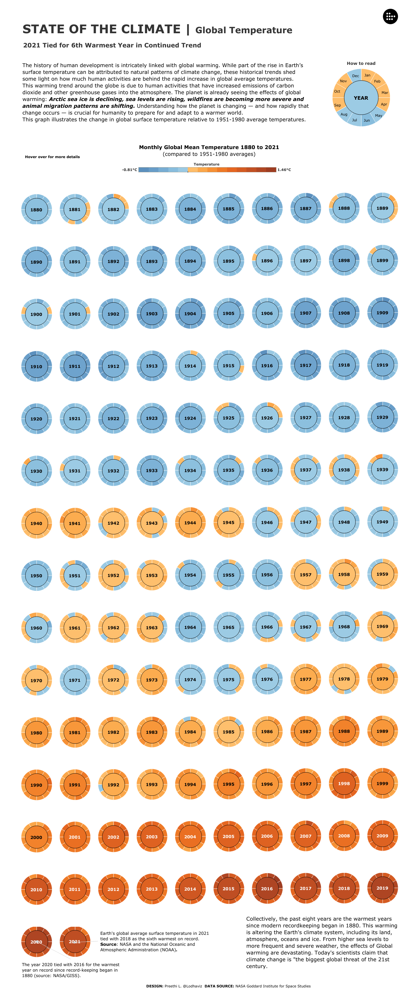
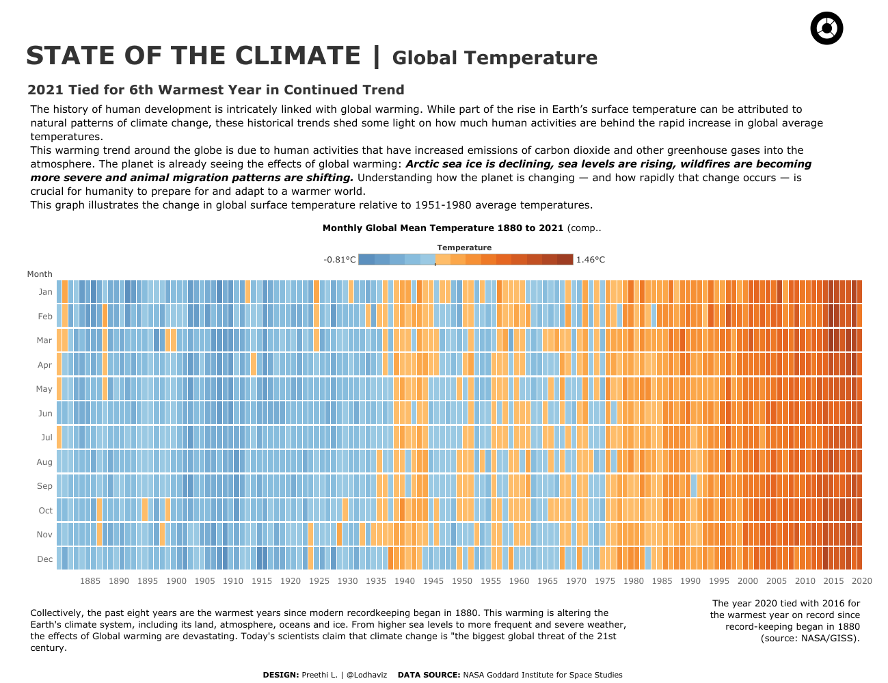
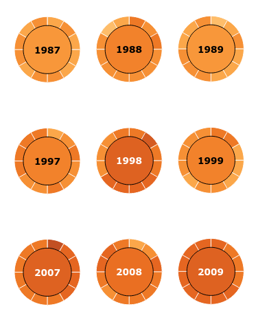
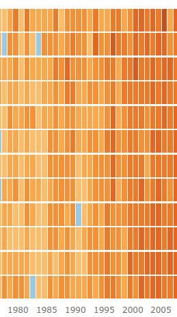

What's good data viz?
(or, what makes things look off?)
We're looking at 4 levels of visualisation validation here: domain/problem → data/task abstraction → visualisation idiom → algorithm/technology.
Domain/problem
- Is a particular visualisation approach even necessary or feasible for the problem at hand?
- Is the data available in the first place? Is it machine-readable? How easy will it be to clean/parse?
Task abstraction (c.f. Matthew Brehmer)
- Why do you want to visualise this data?
- How is the task supported in terms of the visual lexicon of the chart/product?
- How is the task supported in terms of interaction? How is the task supported in terms of what the user is allowed to view?
- What are the inputs and outputs of the task, and what is the task sequence here?
Visualisation idiom (c.f. insert reference later)
- Is the task supported by the right marks and channels?
- Are there any redundant marks or channels?
Algorithm/technology
- Is the technology stack here effective? Do the tools in use let the visualisation run smoothly, or is this a case of 'everything looks like a nail'?
- Can the structure of front-end/back-end technologies deliver the visualisation efficiently? (e.g. caching the necessary small chunks of data instead of everything at once)
Together, we have a vocabulary to evaluate effective data visualisations across different domains. All data visualisations abstract the process of crunching numbers into a series of mental or visual tasks for the user, via the use of one or more visual idioms. Domain/problem and algorithm/technology problems, however, tend to be more implementation-specific; I personally feel it's a little unfair to critique them given that we're commenting on finished products from afar.
Here's the framework as applied to two interactive visualisations I found.
1a. State of the Climate (donut version)
Preethi Lodha, Tableau, 2022

This was posted on r/dataisbeautiful as an exercise in evaluating effectiveness between two visualisations of the same data. As a chart of global temperatures, two tasks are immediately apparent. I want to learn how global temperatures have changed over time, and if there are any patterns I can see given the month-level granularity in the data. Specifically, it would be helpful to view the magnitude and pace of the change, while also having a way to observe finer variations in the data.
The colour channels are effective in communicating the temperature differences. Humans are bad at reading small numbers (fractions of degrees Celsius per month is hardly imaginable) and I think the drastic colour scheme helps in making that difference clear. However, I think the nuances of the data could be better communicated without resorting to exaggeration. Specifically, it's not clear how many fractions of a degree Celsius is represented by a change in colour; the scale isn't labelled well enough.
The other issue I have with the colour channels is more subtle. There was a clear choice to exaggerate the differences between temperatures slightly warmer and slightly colder than the chosen window. The actual temperature rise in fractions of a degree is less than the perceived temperature rise in the colours. At worst, visualisations like these can be fuel for climate change denialists to 'prove' that the mainstream media is prone to catastrophising minor temperature fluctuations. A better visualisation should be able to communicate the scale of climate change and the danger it poses without using visual idioms that can be construed as misleading.
Solutions
- Using a notched scale with a marked zero, as well as choosing round decimal values for the minimum and maximum points, could better combine spatial position and hue/saturation to communicate temperature differences.
- Use a more gentle gradient for the colours so that 'slightly hot' and 'slightly cold' look more similar. The drastic ramp in colour does set aside the 1950-1980 window as a specific visible point of comparison, but it's ultimately an arbitrary one. Using a hue ramp from blue, to beige, to red might more accurately convey the information in the data—my intuition is that the turning point from the late-80s to the present day will be equally visible anyway.
Sequentially, there is a clear taskflow presented by the donut chart by the sheer height of the data; you're forced to scroll down to see it all, allowing the temperature rise to become apparent along the passage of time. However, it runs the risk of becoming too cluttered, as the circles look too similar and the rhythm becomes monotonous.
Solutions
- Fit everything on one screen.
- Use shapes that pack better without visual clutter, e.g. rectangles or squares.
1b. State of the Climate (unit version)
Preethi Lodha, Tableau, 2022

(click on the 'unit' icon in the top-right-hand corner of the viz)
So is the unit chart better? Immediately, we're able to ascertain that this chart is more compact than the first one. The intended reading direction is now from left-to-right; our eyes are drawn from the sections of lighter blue on the middle and left, towards the sections of dark red on the far right. Months are now represented as 12 slices of each vertical bar; by reading downwards, you can immediately identify which months tend to be slightly hotter than the other (March-ish, and maybe October). We couldn't make this comparison in the donut chart, because we couldn't see all the years together like this at once, unless we scrolled up and down a lot and Rain-Manned the heck out of the donut slices. This is an important lesson for task abstraction design—patterns should be discernable with as little input by the user as possible. Our eyes scan a lot faster than our fingers.
The taskflow—a linear journey through time with opportunities to mouseover and explore specific moments—remains largely the same. It does become a bit harder to draw attention to individual months or years the way the donut chart does, simply because every year is squashed together so densely. In other words, it's harder for the presentation of the unit chart to naturally encode popouts with the same level of effectiveness as the donut chart. This is not really an issue when the main story at hand is the drastic rise in temperatures over the last four decades, but it could be detrimental for particular sub-tasks such as identifying particular years.
See, for example, how the anomalously-warm year of 1998 appears in both charts:
1998 is immediately apparent as an anomaly even amidst rising global temperatures in the donut chart.
It's harder to spot this anomaly in the unit chart.
Overall, I think the unit chart is more effective here. However, it still doesn't solve the issue of the exaggerated colour scale.
2. President Barack Obama's Proposed Tax Budget
White House Office of Management and Budget, Canvas, 2016

I'm a lot less charitable about this one given that it's a professional illustration for a presidential campaign. The task we have here is simple: comparing how much Obama's administration planned to spend on certain priorities over others in 2016. Clicking on one rectangle will zoom all of it in, and display some text about the Obama administration's reasoning behind certain budget outlays.
The first flaw that pops out is that the font size for the visualisation is static. The smaller budget categories are completely unreadable as a result. Having the same font for everything also doesn't complement the hierarchy they're trying to communicate, though one might excuse it because of web decay reasons as this is from an archived page.
The bigger problem, though, is the difficulty in communicating data through area. The structure of the treemap fits the role of presenting the budget hierarchically but it doesn't allow for much else if the reader wanted to know more about the data. Humans can estimate lengths and widths more precisely than areas; it's hard to tell, for example, how much more was spent on national defense than income security. In the treemap's defense, it can be argued that the format remains effective for communicating order-of-magnitude differences. However, considering that this visualisation was designed as interactive in mind, there are definitely ways to allow better granularity.
Solutions
- Use different font weights and styles more effectively.
- Label the smaller categories with a callout.
- Categories could have an option to be hidden/unhidden or rearranged alongside each other for better visibility and comparison.
- Alternatively, the whole issue with limited space and comparison can be avoided with a sortable bar chart. While that wouldn't encode information about proportion of the budget, it still helps visualise the relative importance between categories, while also allowing smaller categories to be more easily discovered.
The second issue I have with this is the prominence of the numbers. It takes a while to realise where the spending for each category can be found. You have the mouseover the drab grey headers for each category—a kind of design trap, as the headers can't be more prominent without messing up the visual hierarchy from general to specific, but their lack of prominence makes finding out crucial info about their exact figures unintuitive. Again, any patterns in the data should be easily-discoverable with a minimum of user input.
Solutions
- Putting the spending numbers on each rectangle (or on a caption pointing to each rectangle) would make these patterns more visible, helping the reader understand just how much money is in play.
- The design trap of the drab grey headers could be overcome by printing each general spending category (health care, national defense, etc.) on each big rectangle/caption first, then having the rectangle decompose into specific outlays upon clicking through.
Lastly, formatting the spending numbers in human-readable amounts would also help in parsing the data—e.g. printing "$589.7 billion USD" instead of "$589,720" and a table header stating the unit of measurement. I'll admit it took more time than necessary for me to figure out that the amount of spending at play here was on the order of magnitude of billions. Don't just blindly pull data from a backend—try to parse it for your reader first.
Overall, for a professional application this needs a bit of work.
Conclusion
Using a visualisation validation framework allows us to clarify what 'feels' wrong and easily act upon it. While some of these criteria appear subjective at first glance, breaking down a visualisation into its basic tasks allows us to judge them on their own terms, turning bad design from an entertaining spectacle to a solvable problem instead.
Key takeaways:
- Patterns should be discernable with minimal user input (e.g. scrolling, clicking through, etc.).
- On the flip side, animation helps in overcoming certain design traps of static, finite-space charts.
- Above all, check if your idiom fits the format and task. Does the type of chart hide certain important data? Does the type of chart fit your reader's viewing format?
I hope this has been as helpful for you as it was for me! :)